Team Somerville stepped foot in Somerville on February 1, 2015. Here is our story.
“Be abnormal and untethered.”
These were the words of advice from Mayor Joseph Curtatone. It was our first day of February Residency and we were snowed in. Despite having two Chicagoans on Team Somerville, we were not quite prepared for Boston’s frigid welcome. When our city partners - Stephanie Hirsch and Denise Taylor - arrived at our door, with a spare pair of boots to rescue what they called “LA slippers”, we half expected they would come with skis.
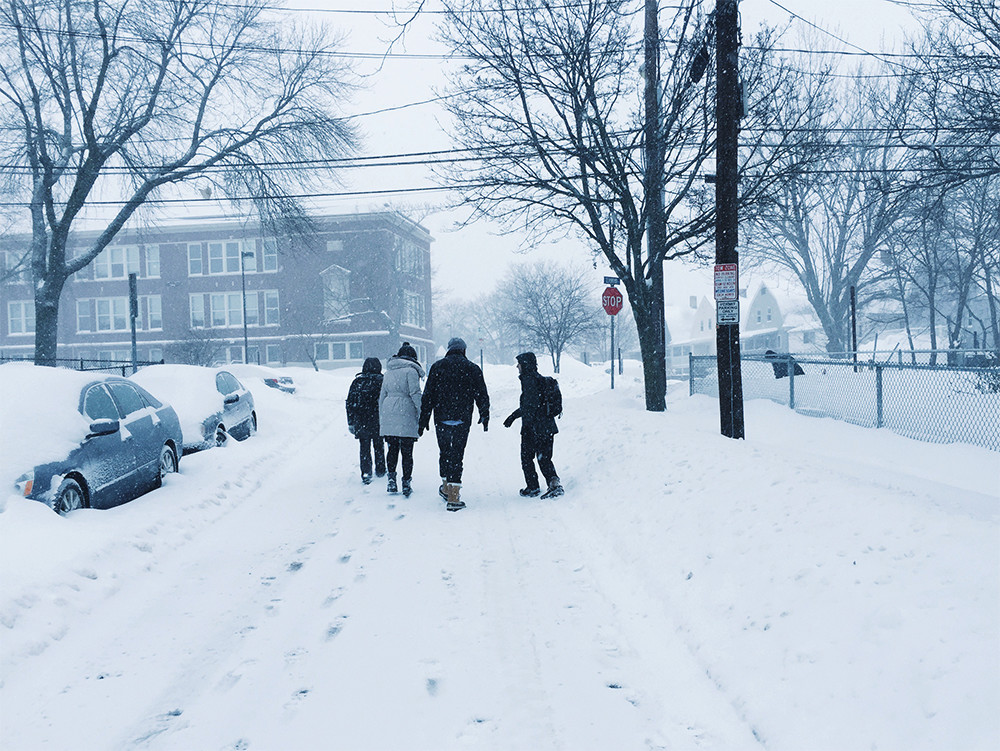
Us walking in the snow on the first day
While many of our scheduled meetings were cancelled due to the State, City and school closures, the eventual record-breaking winter blizzards were blessings in disguise. We adapted and, in many ways, bonded over the shared new experiences: February Fellowship and #BOSnow storm.
With State and City offices closed, we met our key partners in more impromptu and casual settings: at their homes and at cafes. Stephanie opened her home as our temporary meeting space and, while her four children played inside on their snow day home, we shared our visions for the Fellowship, specifically around the much-spoken “Integrated Data System”. Using her children’s crayons and markers, we drew drawings of what the “Integrated Data System” vision was: students, data, and insights. Even little Joey, Stephanie’s youngest child, joined in with his Big Hero Beymax drawings.
We also soon discovered that Stephanie’s home was a revolving door for neighborhood folks who stopped by to simply say hi or to drop off their child for a play date. We immediately saw through these interactions how close-knit a community Somerville is with neighbors opening doors to each other when in need.
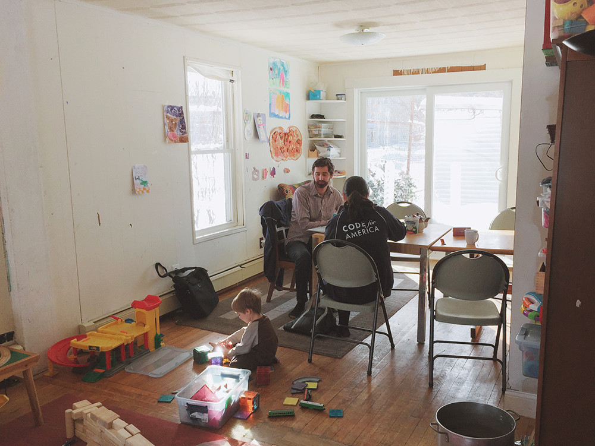
Design sessions at Stephanie’s home with Joey
As a Team of Three, we also had to quickly calibrate with each other's daily schedules and habits. We had been primed to prepare for the possibility that residency might mirror “Real World”, living and working 24/7 with now roommates/teammates who only a month ago were strangers. Our “reality” however was much more like Golden Girls. We spent afternoons working from our kitchen table, out of the local Diesel Cafe, or at our Cummings School office. For lunch, we tried out new local restaurants or ate our packed PB&J sandwiches. In the evenings, tea-briefs, home-cooked greens, and board games became our daily rituals. From our morning standups to our evening tea-briefs, for the 28 days of residency, we had each other to lean on, learn from, and laugh with.
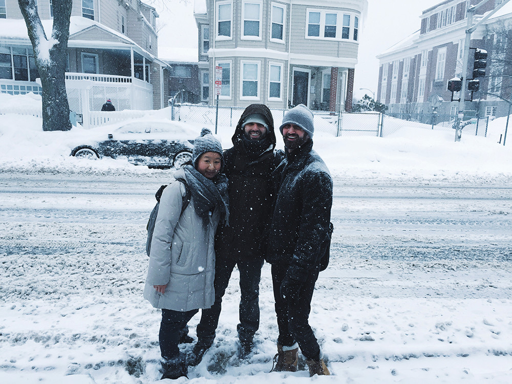
Us walking our 2-mile commute in the blizzard from Davis Square to Union Square
It was not all snowflakes and apple spice tea though. There were inevitable emotional and practical setbacks to not being able to do what we planned on doing: cancellations, postponements, and closures compounded with each inch of snow. But by the end of our February residency, we had shoveled our way through the figurative and literal 64.8 total inches and we had met over 50 stakeholders at the State, City, and schools.
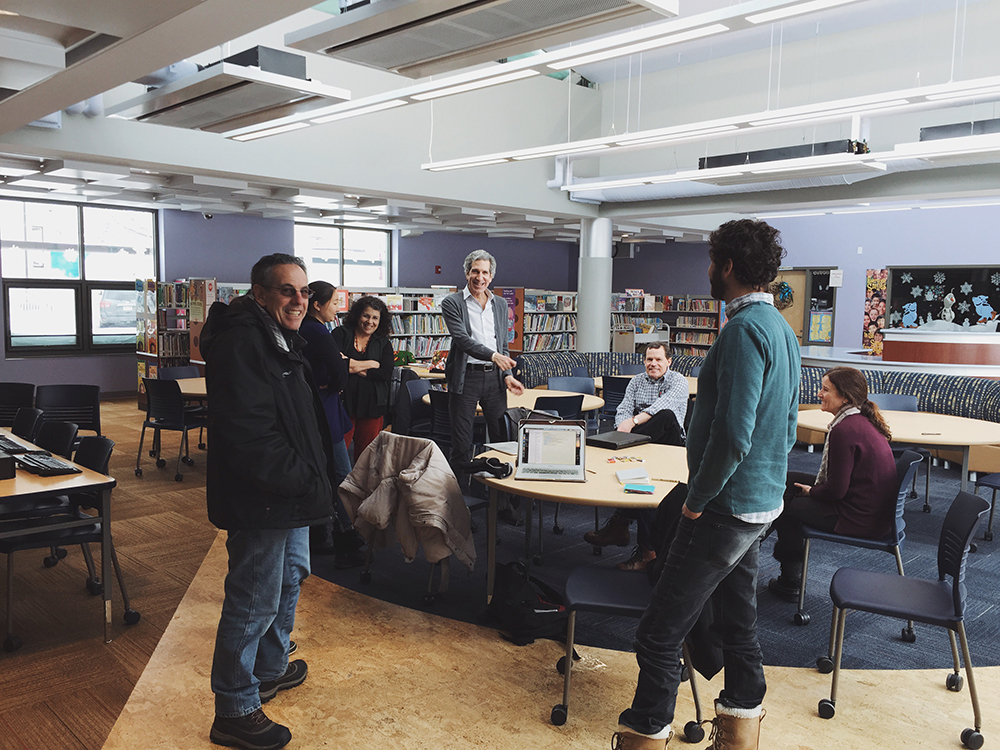
Early Childhood meeting at East Somerville Community School
We spoke with Vince McKay, Assistant Superintendent of Somerville Public Schools, and Uri Harel, Elementary Curriculum Coordinator, and learned how teachers need a way to better connect disparate data sources together in order to help them monitor student learning and support their instruction. The urgency of tapping into these data was described not simply as a way to mine numbers but to meet individual student needs: “Let’s not collect data and sit on it for months but rapid response to what students need and re-teach” (Uri Harel). We heard stories from Regina Bertholdo, Director of the Parent Information Center (PIC), on how the PIC is not only the “octopus” that helps families connect with school and social services but is the helping hand that teaches families how to be empowered and advocate for themselves.
MORE ON ARC OF EARLY CHILDHOOD to SCHOOL AGE
Somerville: The All-American City
Somerville is a small yet bustling city with a population of 78,814 within only 4.1 square miles (Census ACS 2013). With 19,120 people per square mile, Somerville is ranked as one of the most densely populated cities in the country. Experiencing rapid gentrification over the past three decades, Somerville is a melting pot of young and old, local-born and new immigrants, blue-collar families and college students. This diversity is apparent as you walk down the streets from Square to Square. Turn the corner and you will smell the aromas of Brazilian churrasco, Creole goat stew, and Nepalese dal bhat. Sit down at the local cafe and you might overhear conversations about “How can I find childcare?” to “How do I fund my startup?”, spoken in one of the 50+ represented languages.
Awarded the title of All-American City for the third time this year, Somerville has many distinctions to be proud of. Not only is Somerville home to many cultures, it is also a hub of professional diversity with the highest number of analysts per capita in the country and second only to New York in the number of artists per capita. Somerville also benefits from Tufts, Harvard and MIT nearby: “Somerville City Hall attracts the brightest minds and runs like a cross between a startup, a think tank and a fervent nonprofit.”
Over the past 10 years, Mayor Curtatone has developed Somerville into a beacon of innovation, leading the way for smart government and civic engagement. With programs like SomerStat, ResiStat, SomerPromise, and SomerViva, the city has dedicated itself to understanding the needs of all its residents through culturally inclusive dialogue and data-driven insights. In particular, Mayor Curtatone has led the initiatives to use data in decision-making with the belief that “operating without data is like … driving a car blindfold”.
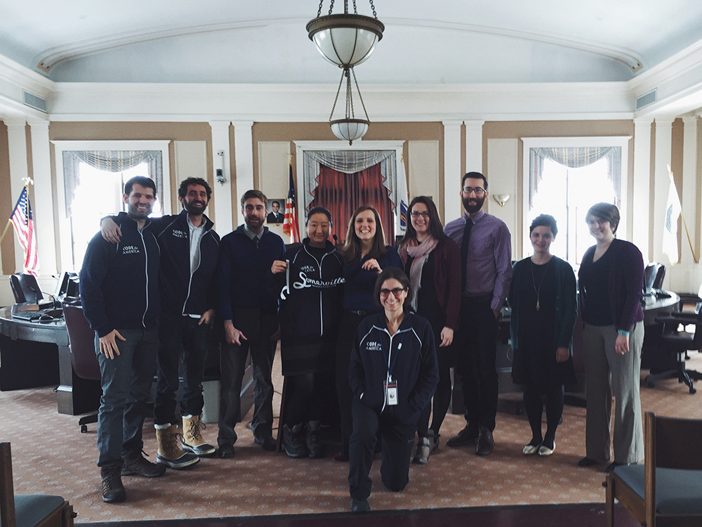
Team Somerville & the SomerStat Team
Primary among Mayor Curtatone’s data initiatives are the SomerStat and ResiStat programs. The SomerStat program supports City departments to use data to inform financial, personnel, and operational decisions towards identifying opportunities to improve City services. The idea behind SomerStat is that “frequent ‘statting’ of city departments via data analysis means that problems as well as opportunities to innovate are continually identified, which ensures that we are constantly looking for better, more innovative answers.”ResiStat is the community-facing arm of SomerStat where City staff and residents can share city data, discuss community issues, and engage in joint problem-solving. Somerville is also the first in New England to launch a Socrata-powered Open Data Portal, increasing citizen access to government data including budget expenditures, 311 call center operations, and happiness survey responses. Not only that, the City Data Dashboard, built by Chief of Staff Daniel Hadley, shows the data as friendly visualizations for residents to interact with, with the Mayor’s philosophy being that “the more transparent and more accountable we can be with the public, they more engaging they will want to be with us.”
Somerville and Code for America
Given Somerville’s innovation in using data in governance and civic engagement, it is not surprising that Somerville’s application to the Code for America Fellowship focused on how to tap into and integrate the existing City and school data systems to create tools that will help identify children at risk and ensure critical services are delivered.
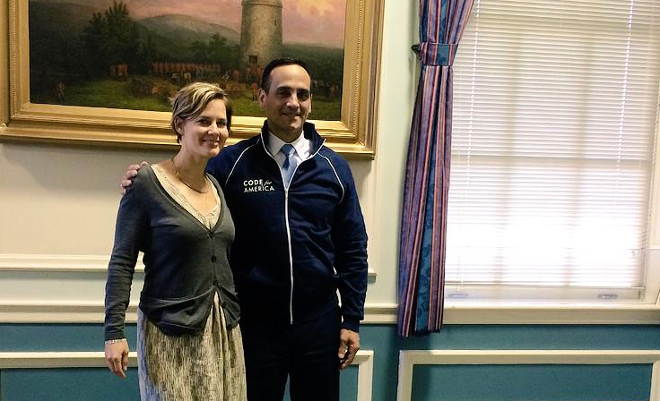
Code for America's Jennifer Pahlka and Mayor Joseph Curtatone
Focus
In partnership with the City of Somerville, Somerville Public Schools and Commonwealth of Massachusetts, we are addressing the question of how to better connect families to services and support they need. A key focus of our work is how to Somerville’s children to learn and thrive, both academically and socio-emotionally, with the support of their school community and family. We are currently focusing on two areas:
Early childhood
School-age
Early Childhood
In early childhood, we are asking ourselves: How might the city welcome every new child born in Somerville? Somerville offers a wealth of resources for families with young children, but many parents don’t know where or how to take advantage of them. How might a “Welcome Basket” help to empower families with access to information and community connections that can better inform their decisions about their children’s health and education?
School-Age
For school-age children, we are asking ourselves: How might we help teachers to identify students struggling both academically or behaviorally so that students can receive timely and targeted support?
Somerville Public Schools collects demographic, assessment, behavioral, and intervention information on their students but many of these data are located in disparate systems, making access and use of them time-consuming and intensive. Teachers have said how looking their classroom’s data can require multiple steps: log in to 7-8 systems, print out pages of student information, and make their own Excel spreadsheets for analysis. How might a tool that integrates multiple student information systems and lets teachers interact with their classroom data help them streamline their current workflow so that more time can be spent on supporting each student's learning?
Project Goals
Increase connections between Somerville families and City/school services
How might the City welcoming newborns help families understand what social services are available? How might this knowledge increase utilization of services such as development screenings, home visits, and playgroups?
Increase access to and use of student data
How might easier access to student data and user-friendly tools help teachers identify student needs and provide timely and targeted interventions? How might these data tools add value to the collaboration between teachers and student support teams? How might these data tools help communicate student progress to parents?
User Research
As our Lead Designer, Amir has shared the user research and design principles with not only the Team but also our city partners and Somerville community. Here are some of his key takeaways.
Learn from People
When building a thing we should know who we are building that thing for. Learning from the people we are building with will give us the insights we need. Letting us build a thing that better fits their needs by understanding their behaviors, motivations, and frustrations.
Focus on People
By keeping our focus on the people we are building with we are better able to meet their needs. Prioritizing ideas and concepts quickly based on their feedback lets us filter down to what is important to them quickly. Letting us build a thing that matches their needs rather than building a thing we imagine matches their needs.
What We Learned
Go learn from people. If you feel like you can’t or aren’t ready yet, it is more than likely just in your head. Early and often is a term used for shipping code but the same can be said about learning from people. They are the ones who know what you should build so go ask and listen.
Projects
Welcome Baby
In conversations with City staff and local parents, we heard that for new families knowing what resources are available and how to access them can be challenging. We heard this sentiment voiced again and again by families from diverse backgrounds, from a teen mother to a long-standing City official: "There are so many great services available in Somerville. Help is out there but you need to know where to look and how to get the help." We started to ask ourselves the question: How might the City of Somerville welcome families with new babies, providing them with information on the social services available such as developmental screenings, home visits and playgroups?
We had heard from our first meeting with our City partners and again throughout our Fellowship, the story of a teenage mother who had given birth to an early-term baby. Discharged by the hospital with advice to seek early intervention services, the mother missed these crucial services as she moved from city to city. By the time her child entered kindergarten, she had developed severe mental and physical delays. One might assume that the mother was complacent in her child’s care. This was not the case. She sensed her child was having difficulties and actively sought help, walking to a nearby school to seek professional advice. Unfortunately, the school was closed for summer break and she left empty-handed. It was only after entering the school system that the teacher identified the child as in need of special education and referred her to get the individualized support she needed.
Compelled to not repeat this story again, our City and School partners investigated the teen mother’s journey to better understand what obstacles she faced, which doors closed, and what opportunities were missed. While the City has a strong network of social service providers including Somerville Public Schools, Somerville Family Learning Collaborative, SomerViva, and the Parent Information Center, we needed to understand how to make sure that all families, especially those isolated from the usual channels of communication, could learn about, connect with, and grab onto the lifeline that they need when they need it.
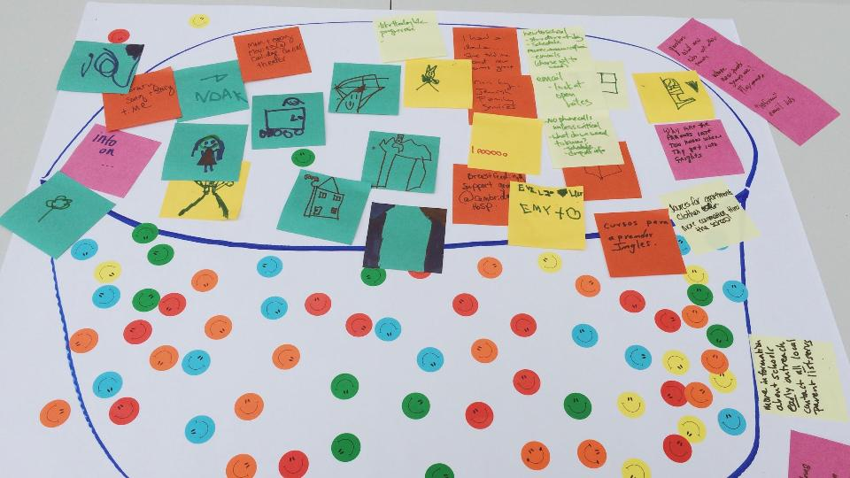
Us doing community engagement at the Healey School Tot Lot
We interviewed the Somerville Family Learning Collaborative (SFLC) about the challenges they face when conducting outreach to parents. Lack of contact information for new Somerville parents was ranked as the biggest challenge.
Given this lack of a comprehensive directory of Somerville newborns, we want to test the concept that Somerville could leverage birth records data to locate and welcome new children. In collaboration with the Massachusetts Executive Office of Health and Human Services, we hope to get our hands on birth certificates that include contact information for newborn families which SFLC could use to reach a wider net of families than they currently do by word of mouth and canvassing. As Anna Doherty, Director of SomerPromise says, "It’s precisely those first days and weeks when many parents need the most support of all and when long-lasting habits start to form."
Proposed Next Steps
Commonwealth Department of Public Health (DPH) and City of Somerville sign MOU regarding use of birth certificate data for parent outreach.
Commonwealth DPH extracts 1 month of information from the VIP Birth application on families living in Somerville that have had new babies, including only core contact information: name, address, home language, and phone number.
Somerville Family Learning Collaborative uses the information to send Welcome Packets and make outreach phone calls. The goal is to test the hypothesis that this outreach will be useful to new Somerville parents.
If the pilot is successful, expand collaboration and provide the SFLC with birth certificate information on an ongoing basis for outreach purposes. The Code for America Somerville fellowship team can provide technical assistance with export/integration
Teacher Tool
The Somerville Public Schools, much like the City of Somerville, has been using data to inform how they support their students in and outside the classroom. For example, teachers and school support staff review their student’s behavior and academic performance records during Assess & Re-Teach and Student Support Team meetings to tweak instructional strategies and to provide additional supports.
The value of data is to derive insights that can lead to timely and targeted actions. The challenge faced by Somerville Public Schools is that many of their student data live in different worlds: in local student information systems, in State data systems, and within private enterprise software. Extracting this data requires time and effort not only on the part of administrators and district data analysts, such as Kenya Avant-Ransome, but also by teachers who proactively log into these multiple systems to pull student data to analyze by hand or in Excel.
Currently, Kenya pulls demographic and assessment data from the district’s Aspen X2 student information system, the State’s Edwin Analytics system, and the STAR enterprise local assessment software. She merges these data in MS Access and creates a PDF report, “Student Roster” for each classroom in Somerville’s eleven public schools. The report displays student demographics, assessment and intervention data in a table, categorizing and highlighting students by low, medium and high risk. Teachers receive these report at the beginning and middle of the school years after the main district assessment results are in.
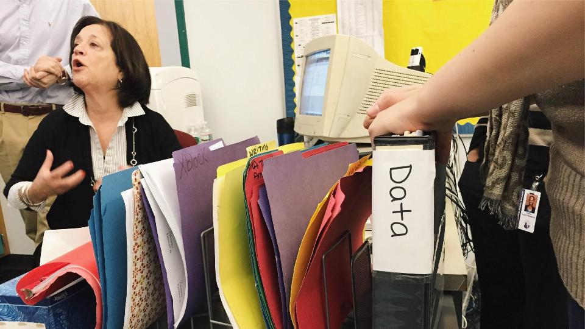
Learning from the Healey 5th grade team
When we spoke to teachers, we heard that while these reports are useful, they arrive at their desks after the start of the school year - not before - reducing the advantage of knowing about their new classroom of students from the first day. Teachers have worked around but pulling their students’ information themselves to be prepared for the first day of school: logging into multiple student data portals, printing out pages of student information, and collating this information for ad-hoc analyses. Teacher have also said how while looking at their student’s data can be insightful, the true insights comes from digging deeper which a static sheet of paper does not let them do.
The challenge with the current roster is, as described by the creator Stephanie Hirsch herself, that the static PDF version is “not replicable, not scalable, errors introduced, not flexible”.
Collaborating with Healey Teacher Tools
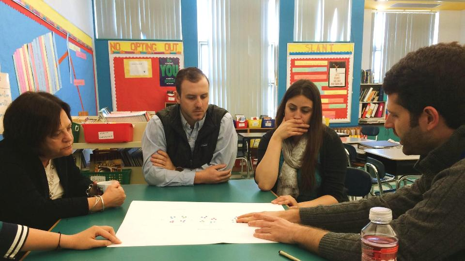
Working with the Healey 5th grade teamStudent Insights: ProfileStudent Insights: Roster
Timeline
June 2015: We are testing the app with more teachers now and building out the student profile features with the help of Code for SF and Code for Boston brigade volunteers.
May 2015: We are considering the app an alpha product now. Our focus is on building out the student profile feature and improving the roster view while testing working iterations with our teacher partners at Healey.
April 2015: We had our first call with Healey teachers and principal to get feedback on a working prototype of the app using real data.
March 2015: We started writing and testing functions to import data from Somerville's Student Information System and student assessment sources.
February 2015: We met with the fantastic 5th grade teacher team at Healey throughout the month to learn about the challenges they face, see the current tools they use, and sketch paper prototypes together.
January 2015: We kicked up this app during Build Week as a warm-up getting-to-know-you exercise. The initial product idea and subsequent feedback came from Stephanie Hirsch. This app drew from a single set of de-identified sample data from Excel to generate risk levels by homeroom, so it couldn't do anything useful in the wild. We said: "If this demo seems promising to stakeholders and early iterations prove useful, it could grow up over the course of the fellowship year."
X
Y
Z
a
b
c
d
XXX
Special Education
XXX
Side Projects and Other Fun!
Building a simple searchable map & SMS interface that maps locations and texts information on nearby early childhood care centers in Somerville.
Co-creating with City staff at the City Design Night: learning the human-centered design process and imagining how city services could better serve residents.
Unlocking the power of the Code for America Fellowship & Brigades.
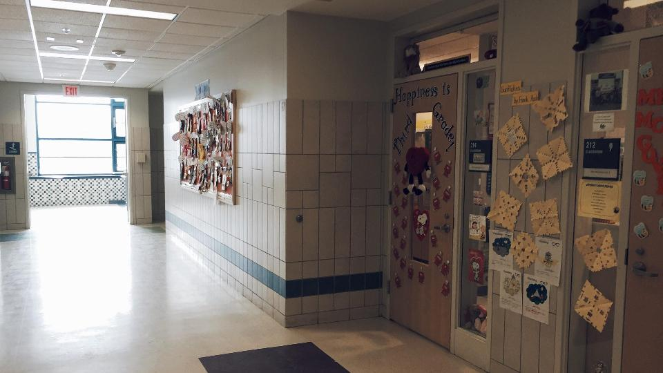
A hall inside Healey School
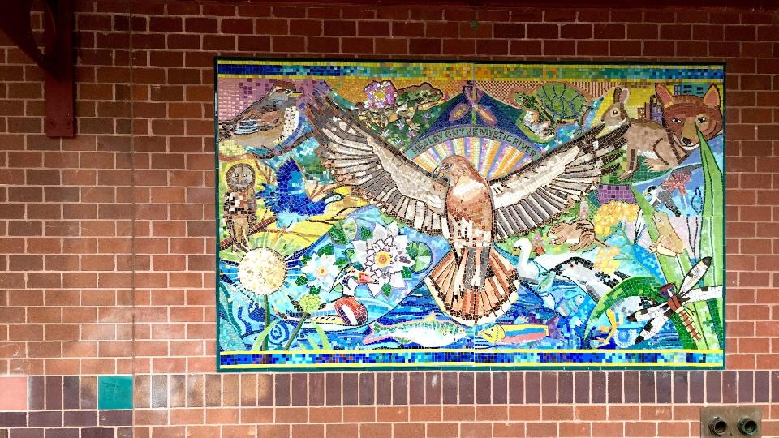
Outside of Healey School
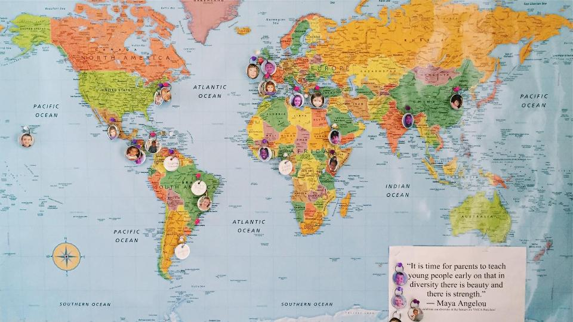
Map of parents origins
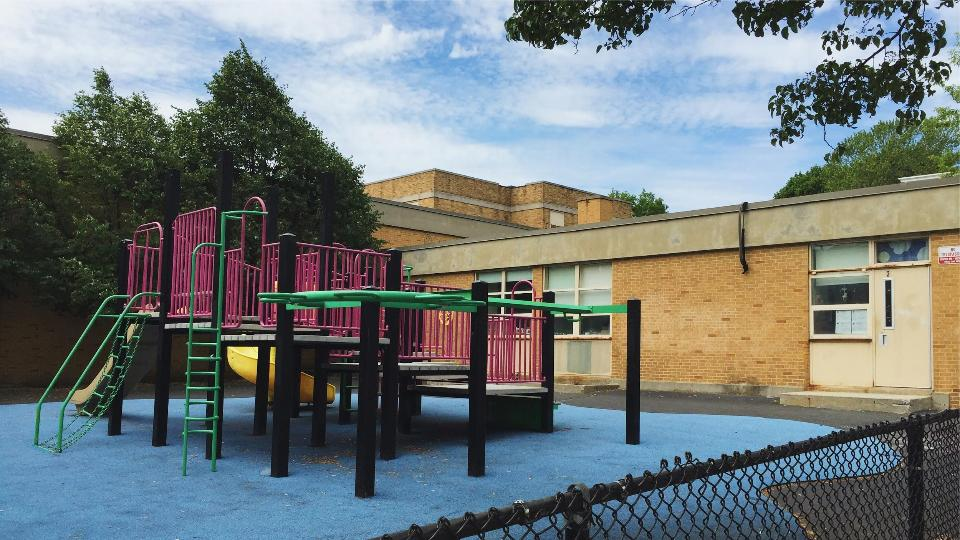
The Parent Information Center
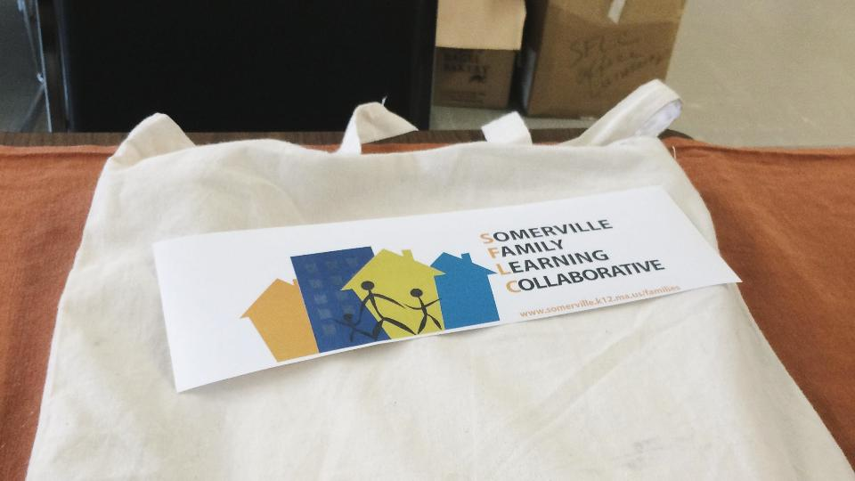
A prototype of the Welcome Basket